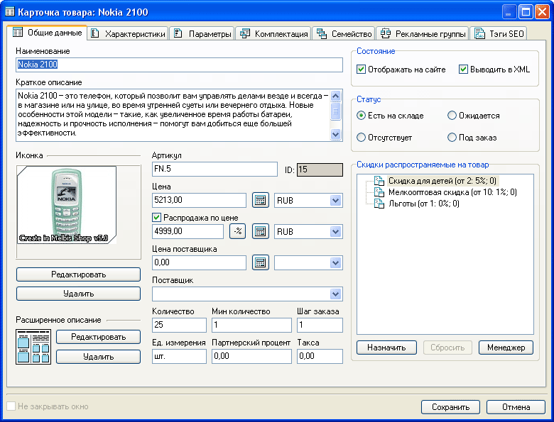
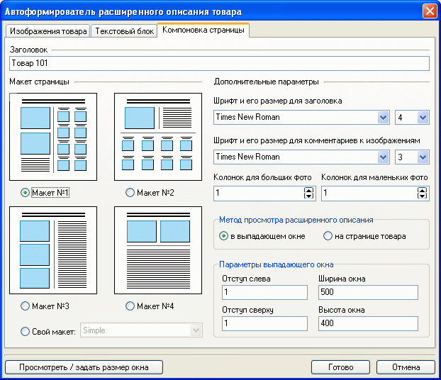

Все сведения о товаре хранятся в его карточке. На закладке "Общие данные" карточки товара указывается наименование товара, дается его краткое описание, указывается артикул (например в соответствии с принятым в бухгалтерской программе учета, или назначаемый автоматически программой Melbis Shop), единица измерения, цена, количество, партнерский процент, минимальное количество и шаг заказа (игнорируется при реализации остатков), такса (величина, используемая в расчете стоимости доставки).
Начальные стоимости товаров могут задаваться в различных валютах, впоследствии стоимость товара пересчитывается в базовую с учетом указанного курса (Настройки-Валюты, используемые для задания цен).
Для группового назначения одинаковых общих свойств товаров и тегов SEO можно использовать автовычисления.
Помимо того, в карточке указывается состояние товара ("Отображать на сайте" - товар отображается на страницах интернет-магазина), статус ("Есть на складе", "Отсутствует", "Ожидается", "Под заказ"). На основе изображения товара через формирователь изображений формируется иконка.
Каждому товару может быть задана собственная система скидок, предварительно определяемая с помощью менеджера скидок. Возможно назначение скидок сразу нескольким товарам магазина из главного меню программы выбором "Товары - Скидки - Назначить скидку группе товаров".

Для товара могут быть назначены распространяемые на него скидки, значение цены при распродаже и дано его расширенное описание с дополнительными изображениями, которые формируются в "Автоформирователе расширенного описания товара". Его вызов осуществляется нажатием кнопки "Редактировать" в группе "Расширенное описание".
Закладка "Изображения товара" автоформирователя позволяет добавлять, удалять, сортировать и редактировать изображения: "большое", "небольшое" и "появляющееся при клике на текущем изображении", а также давать описания к ним.
Закладка "Текстовый блок" дает возможность внести и отформатировать текст подробного описания товара.
Закладка "Компоновка страницы" позволяет выбрать макет страницы расширенного описания и его другие элементы, определяющие внешний вид.
Возможно выбрать метод просмотра расширенного описания (выпадающее окно или то же окно), а для выпадающего окна еще и задать параметры.

Имеется возможность самостоятельного создания макетов страницы описания. Макет представляет собой совокупность HTML-шаблонов, расположенных в определенной директории. Директории с шаблонами должны находиться в папке "Templates" установочной директории магазина. В частности, по умолчанию там уже расположены четыре типовых макета: Template1, Template2, Template3, Template4.
Кнопка "Просмотреть / задать размер окна" позволяет не только увидеть внешний вид сформированного расширенного описания товара, но и скорректировать размеры и местоположение выпадающего окна. Результаты корректировки запоминаются и подставляются в "Параметры выпадающего окна". Следует учесть, что для корректного отображения окна расширенного описания у пользователей, имеющих мониторы с различными разрешениями, желательно располагать окно в левом верхнем углу ("Слева" - 0, "Сверху" - 0) и задавать его ширину не более 700, высоту - не более 500.